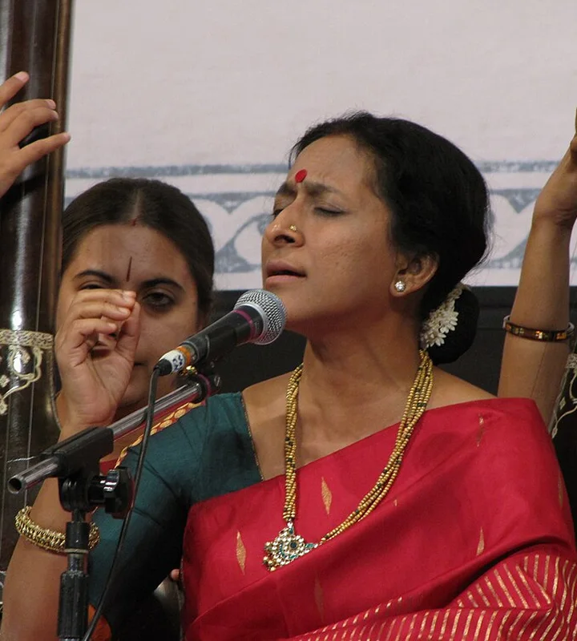

Saraswati Veena • Principal
Vidushi Dr. Meenakshi Sundaram
Ph.D. in Musicology (Madras University), AIR Top-Grade Vainika, recipient of the Sangita Kala Acharya title. 38 years of teaching in the Thanjavur Gayaki Bani.